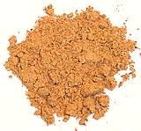

 |
CG Bay SeasoningCalifornia | ||||
| Makes: Effort: Sched: DoAhead: |
4 oz * 10 min Yes |
This seasoning is fairly "plug compatible" with Old Bay Seasoning
® popular on the U.S. East Coast for chicken, shrimp and most
particularly steamed blue crabs. Ours is a little more aromatic and a
little less red than Old Bay. Note: for seasoning steamed crabs this would be mixed with an equal amount of salt. | |||
|
|
2-1/2 2 3-1/2 1/2 1/2 1/2 1/4 1/4 1/4 2/3 4 4 8 |
T T T t t t t t t |
Salt Celery seed Paprika sweet Cayenne pepper Black pepercorns Mustard seed Cinnamon Cardamom seeds Ginger ground Mace blade Bay Leaf Allspice whole Cloves |
Make: - (10 min)
|